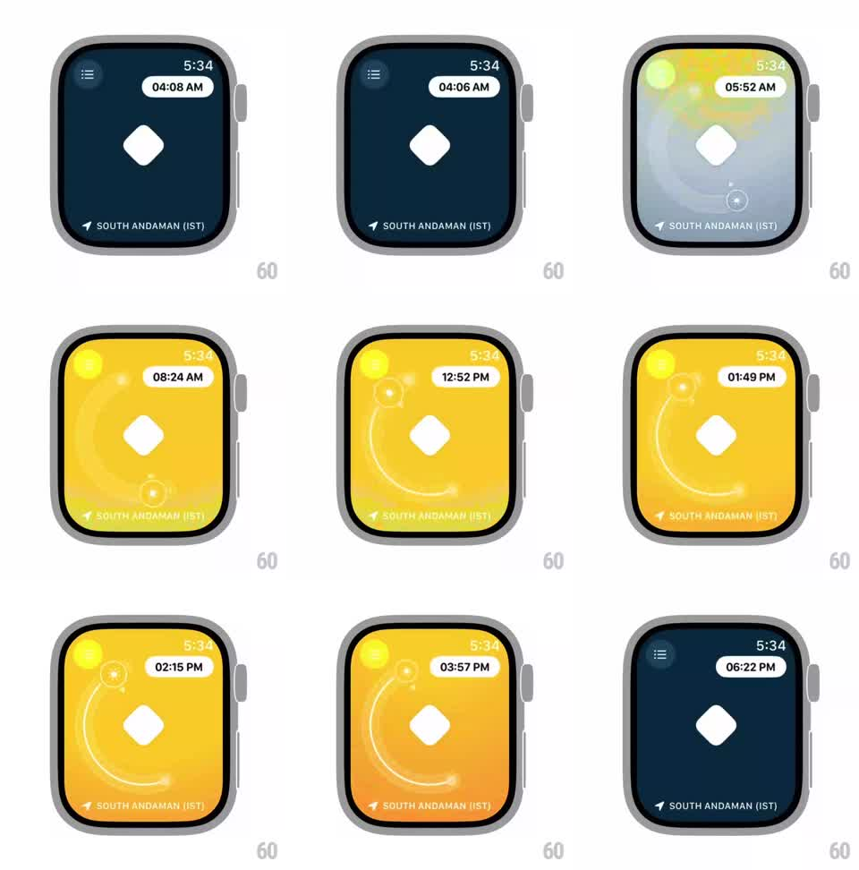

Media
Frame-by-frame

Rebuild this interaction 1:1: a watchOS sun-position dial - scrubbing time moves a glowing sun along a spiral arc while the whole face's background crossfades from night navy through dawn to bright midday yellow.

Rebuild this interaction 1:1: a watchOS sun-position dial - scrubbing time moves a glowing sun along a spiral arc while the whole face's background crossfades from night navy through dawn to bright midday yellow.
## Integration
Integration: stack-agnostic spec - springs given as stiffness/damping, timed motions as duration + curve; map every value to your framework and animation library of choice.
## Scene
Apple Watch face: menu icon top-left, small clock "5:34" top-right, a white pill reading the scrubbed time ("04:08 AM"), a white rounded diamond glyph center, location row "SOUTH ANDAMAN (IST)" bottom. A spiral arc trail sweeps the lower half with a glowing sun orb on it.
## Motion spec
Pattern: crown/drag time scrub driving color + sun position.
- Scrub (crown or drag): the time pill updates live; the sun orb travels along its spiral arc proportionally to the hour (low-left at dawn, high arc at noon, back down at dusk).
- Background: full-bleed color crossfade keyed to the sun's height - deep navy at night, pale blue-white at dawn (~06:00), saturated yellow by midday, back to navy by ~18:00; interpolate continuously, no steps.
- The sun's glow halo blooms as it rises (opacity/blur scale with height); at night the orb and trail fade out entirely, leaving navy.
- White diamond and pill stay fixed; text inverts appropriately (white on navy, dark-navy on yellow).
## Calibration
- Position AND color are both direct functions of the scrubbed hour - scrubbing backward runs the sunset in reverse.
- The spiral trail draws progressively behind the sun.
## Reduced motion
Background steps between 4 keyed colors; sun jumps to position.
## Don't miss
- The pill reads the SCRUBBED time while the small top-right clock stays real.
- Night state removes the sun entirely - no dim orb left behind.